My trip to Creete.
One city, one hotel, one vacation and my mother and I. This is my trip to Creete. Of course it will be enough usual narrative because we had a “pocket tour”. But why no, if it was cheaper.
We chose a beautiful city Agios Nikolas that is located in the bay “Mirabello”, it’s important for me because I’m a bad swimmer and can swim only in the calm sea. Also we wanted a sandy beach. And we were right, there were waves in all beaches exept our. Our hotel “Santa Marina” was lovely for 3 stars. Clean rooms, good service, great location in the city center and the best advantage – the sea is across the road. To the city center is 5 minuts by foot. And there are lots of shops and cafes around the hotel.
Our beach and the hotel. (I forgot to say, there is a marina, near the our beach.)
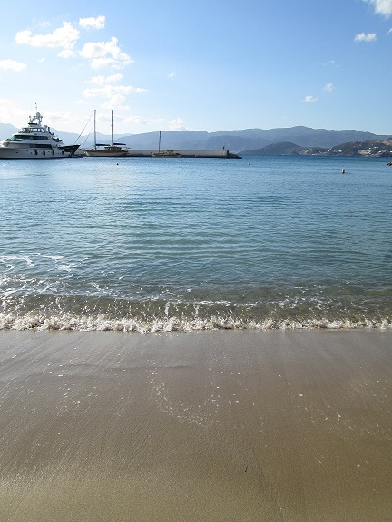
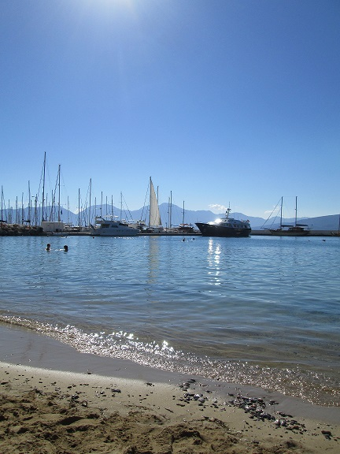
In a map the city looks enough big, but actually it’s not so big. We were walking many kilometres every day and we visited many places in the city. For me the most interesting was our walk to a usual residential area. During that walk we found an old chirch, it was the very small chirch but beautiful and conciliative. On the way back we got lost, but local people told us where we were.
The local homes (I wish I lived in that home in old age.)
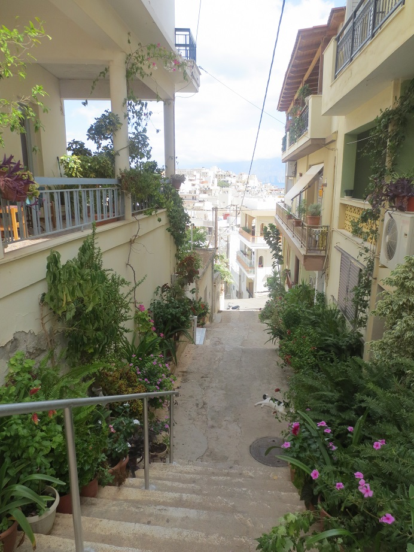
There were lots of pomegranate’s and lime’s trees. Some people have goats and cocks. And everywhere were cats, very big and muscular.
Elmost every evening we went to a shop for fresh orange juice, that was sold in bottles. People in my country usually don’t drink fresh juise every day, and at cafees it costs not cheap. Another interesting things I notice – the way of selling bananas, and coffe. They was amazing smell of fresh gring coffee.
The way of selling bananas.

The most popular place in Agios Nikolas – the lake. There are lots of cafes and restaurants. It is interesting that one side of the lake it’s a bluff rock. I don’t know why but I couldn’t imagine that it can be.
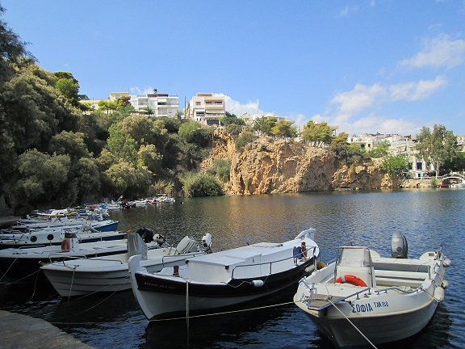
The lake was with fresh water but after an earthquake it stopped regenered and started stink. So, people join the lake with the sea because it was very near to each other and now the lake has a sea’s clean, salt water. As I was told, nobody knows how deep is the lake. After a war there were flooded tanks and other military equipment. Every evening I saw a lots of, no, thousands sea urchins in those lake.
Behind of me you can see the lake and a small bridge, after the bridge is the sea.
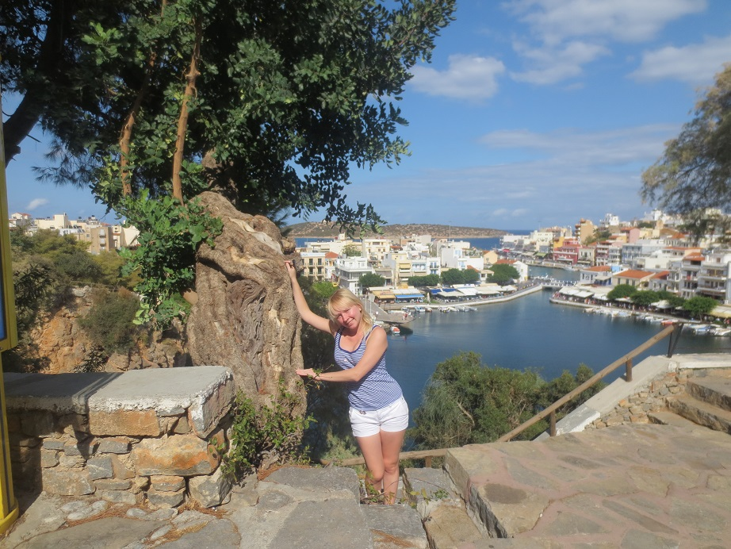
While we were wolking at the lake, we found an interesting “frozen yougurt”. It looks like ice cream, but it don’t and the taste isn’t like Russian yoghurt. All people must taste it!
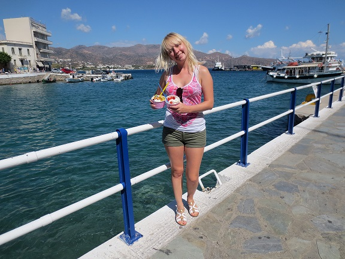
Of course all Russian people visits Creete for sunbathing, travelling, swimming. But I wish I saw Creete during raining. I would like to see how rain’s water trickled down street’s stairs. And I think the nature will be more beautiful in autumn, because the summer in Creete is very hot.
Majority stairs are very sharp.
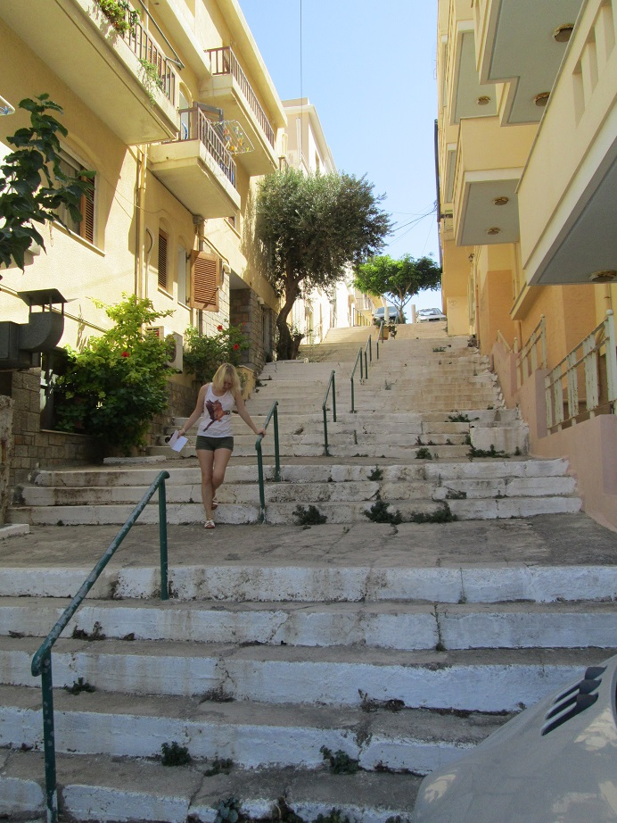
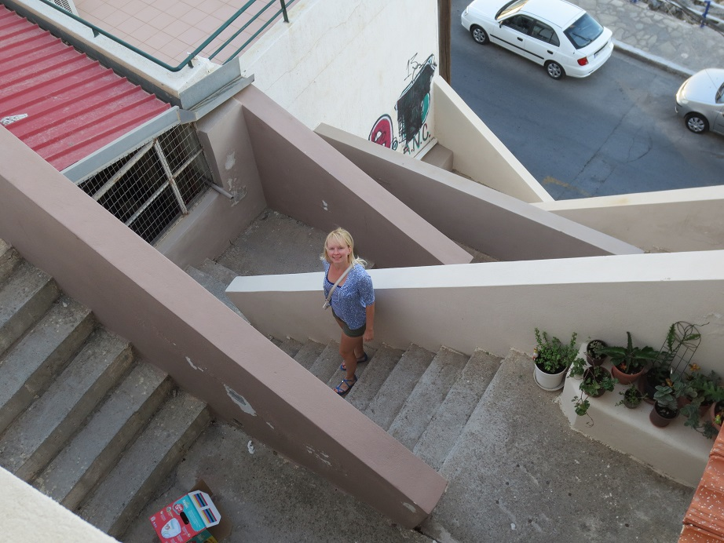
Each wensday in Agios Nikolas come farmers and organize street market . Mo mother and I went to the market early morning and we were able to buy something, but through 30 minutes all market was overcrowded. We couldn’t walk, choose because there were too much people. But I had enough time to buy some honey and T-shirts.
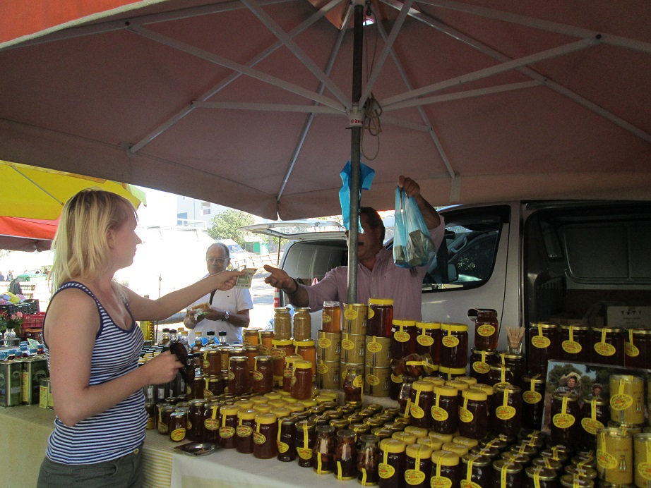
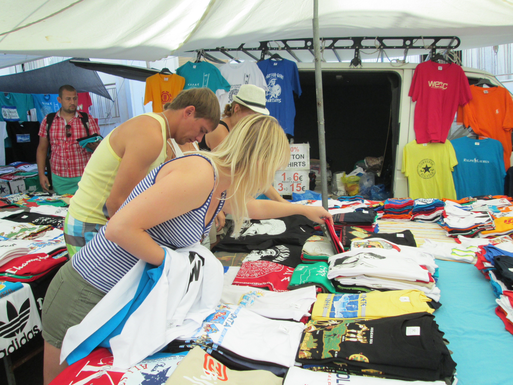
We visited some excursions. During excursion to islands Santorini I saw dark sand and it was enough cool. Dark sand was bigger thant usual sand and my feet fall into dark sand almost on 5 centimetres . It’s a pity that we didn’t have apportunity to stay at that dark beach for some days.
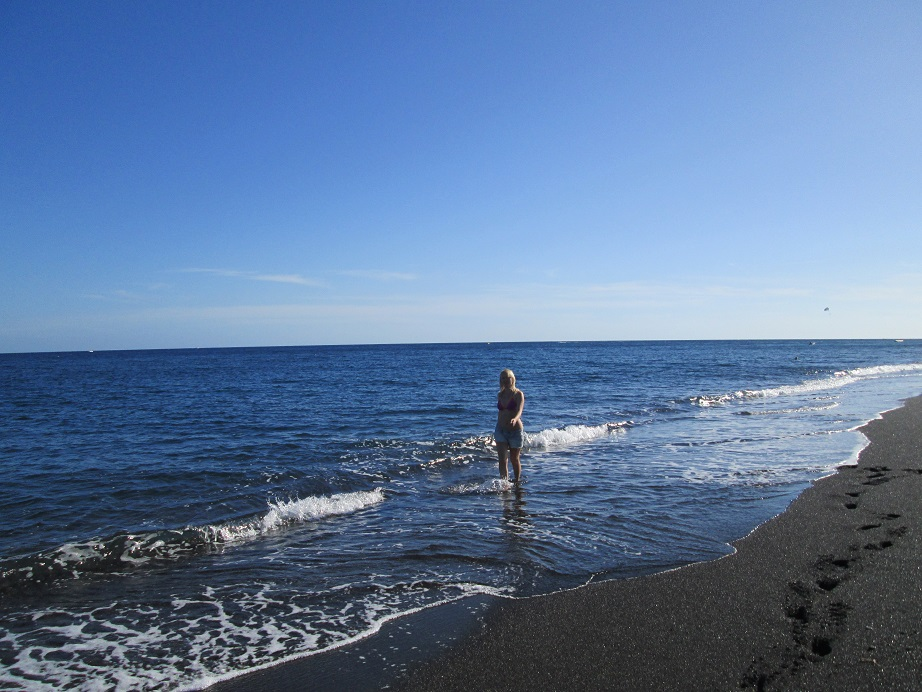
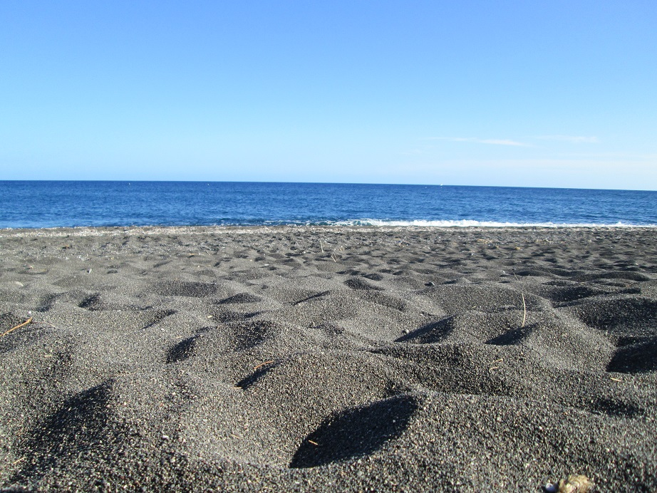
Santorini is beautiful…..but…. I wasn’t so impressed. May be if I had stayed there for some days I would have understood why people says Santorini is amasing. It’s a pity that we can’t ride at donkeys. A long time ago people used only donkeys to walked up the island. Ascent is enough sharp and contains a lot of stairs. Nowadays donkeys are used only for tourists.
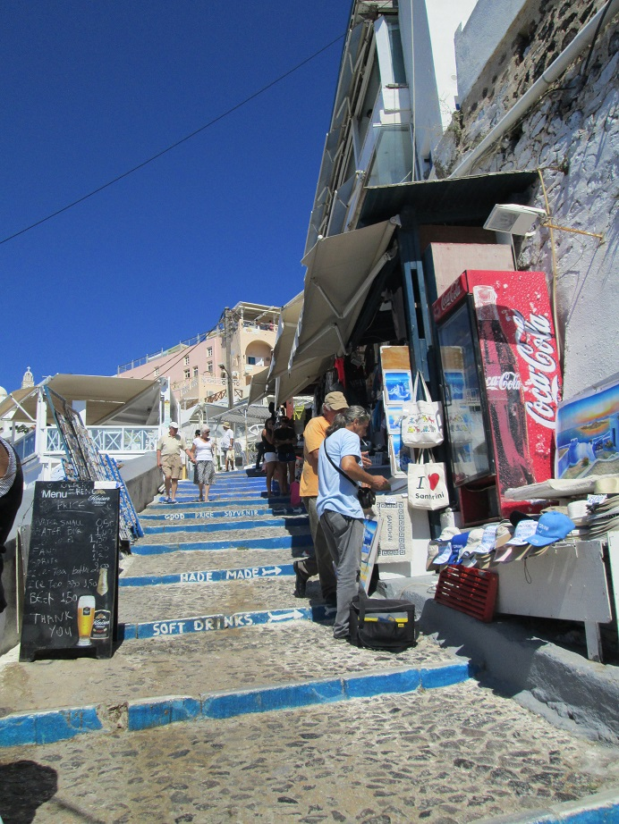
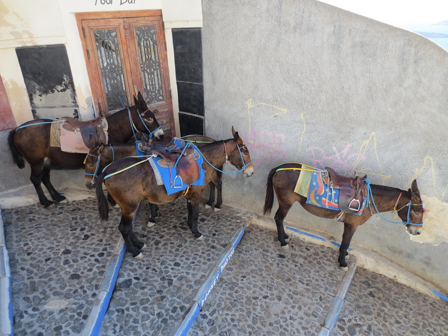
After Santorini I wanted to visit excursion “on train”. The train rides like other cars and runs through all city and nearest villages. The excursion was interesting but I didn’t hear all information because other car’s noise.
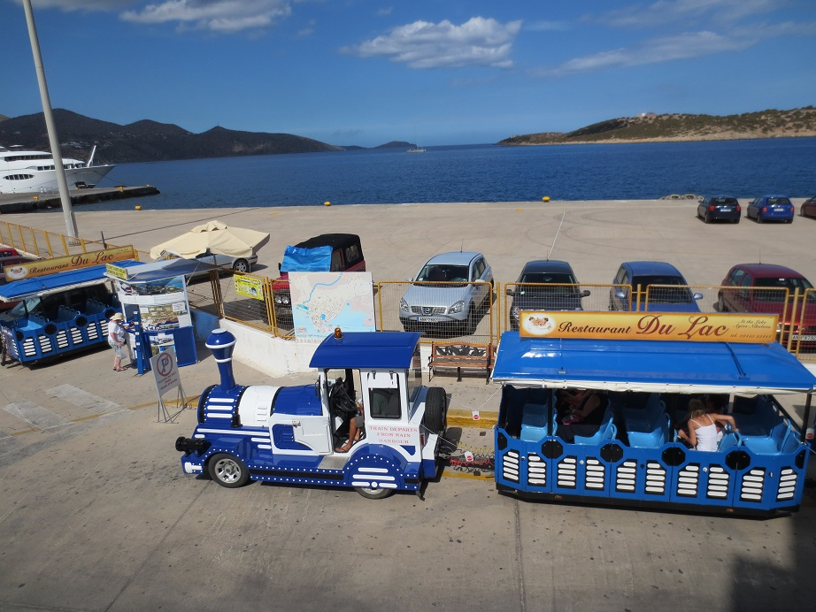
When we arrived to the village (I don’t remember the name of the village) we had some free time. So we went for a walk and eat. I was surprise how big was grapes which was grovin everywhere like ornamental plants.
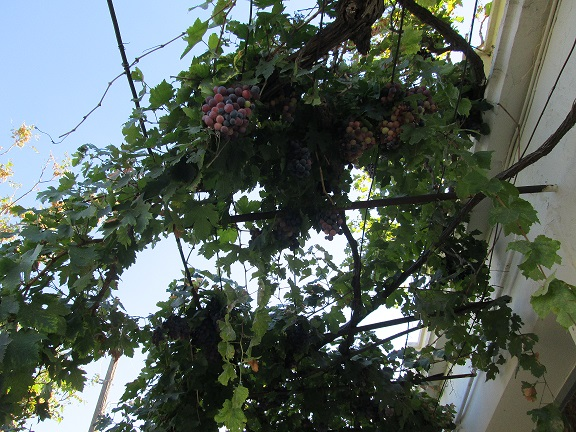
So, my filling after this trip was like this article – higgledy-piggledy. I had a good rest, I spend time with my mother, the weather was good, the hotel was good, all was good, but…. I did’t feel myself at Creete. It might be some other island…
I’ve already visited Greece with my mom before, but it was a mainland and it was awesome trip. I still remember what we were doing, how looks our hotel and beach, stunningly beautiful nature, the tastiest food. At Creete I expected something similar, but didn’t feel.
Summaries:
1 – To write all article in on period (at list during one week)
2 – To get my own driving license and rent a car
3 – To buy a special weigher for luggage (our luggage was overweight because of bottles of honey and olive oil)
4 – always take a bag for hand luggage
5 – To write and summarize all charges